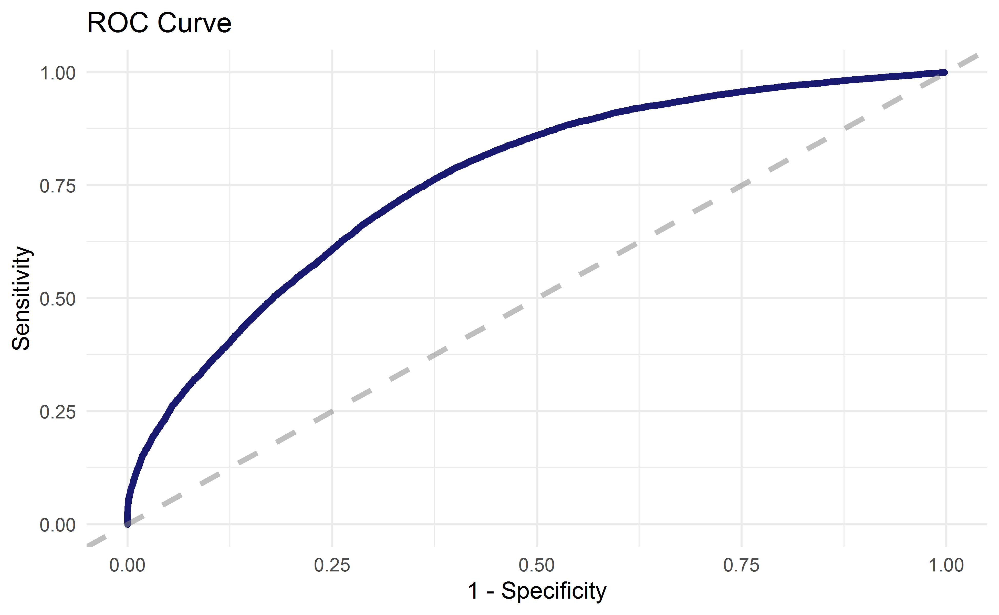
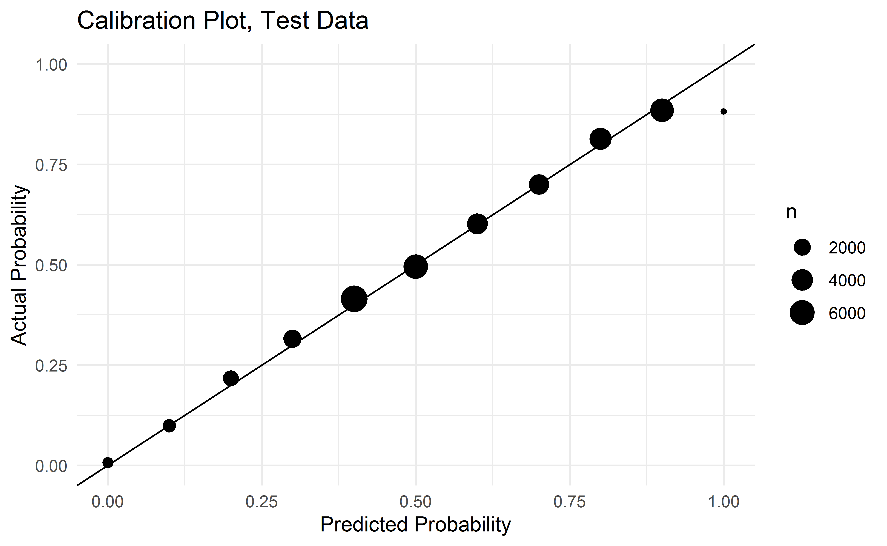
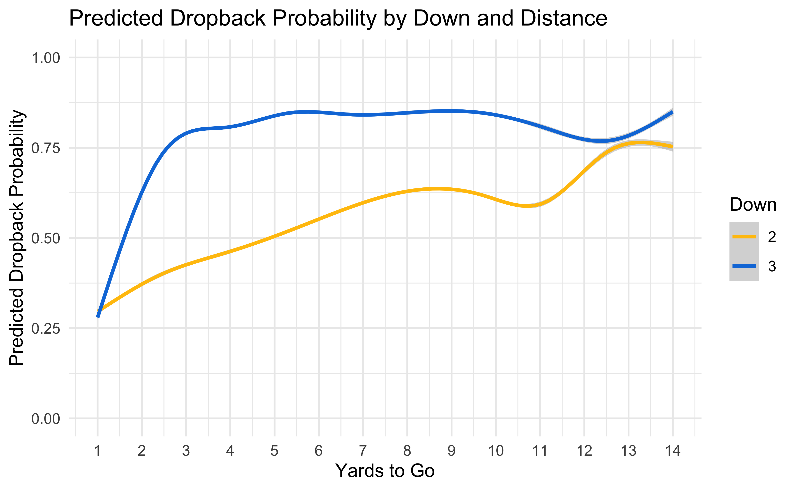
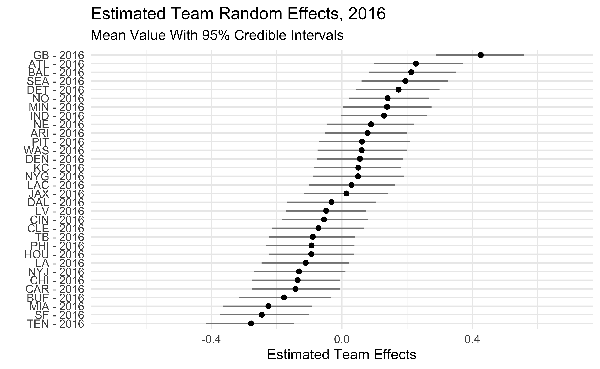
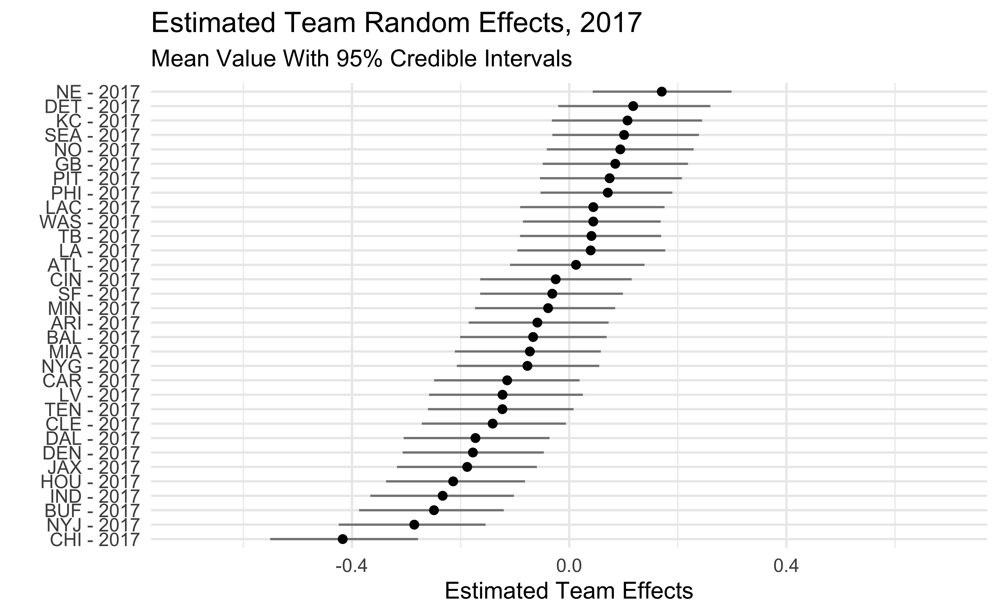
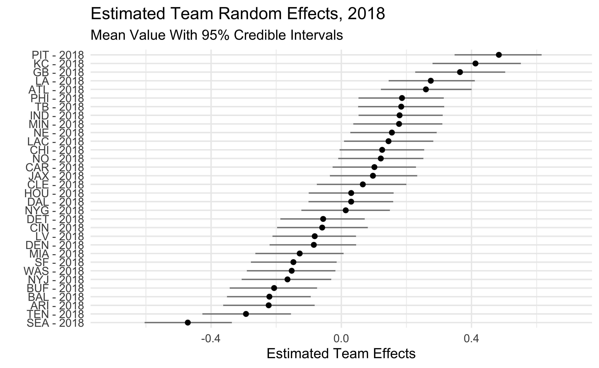
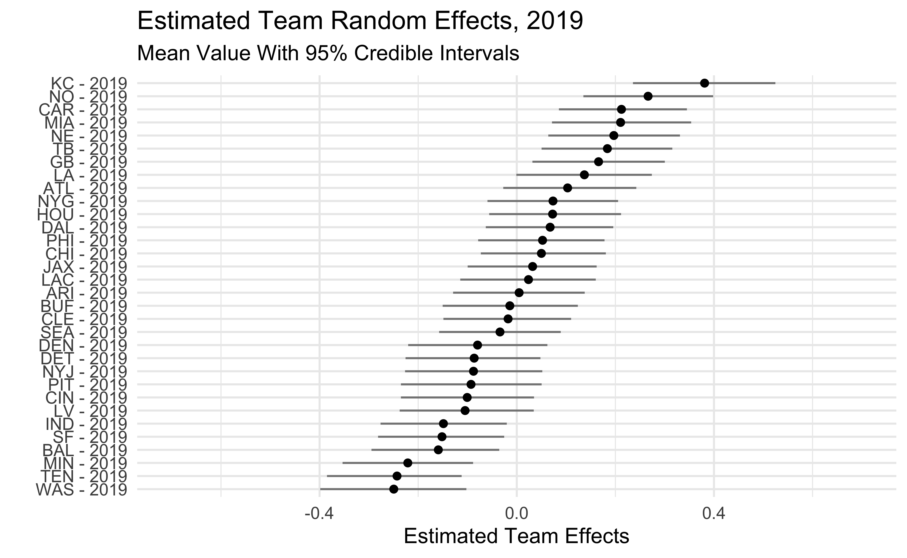
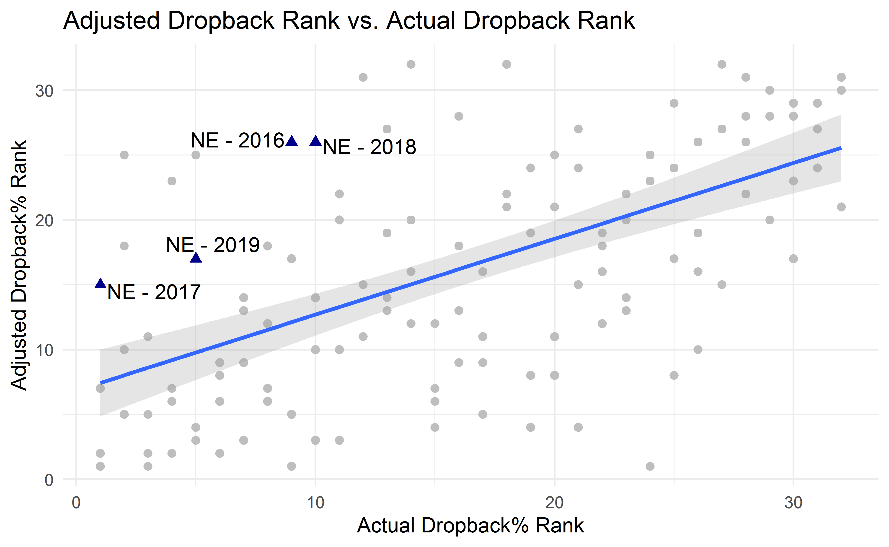

Table of Contents
As a Seahawks fan who spends a good amount of time online I’ve been exposed to a lot of discussion about the value of running vs. passing. A point used in favor of a rushing-focused attack is that good teams tend to run the ball a lot. This is usually met with the response that teams who are ahead will run to kill clock and minimize risk, meaning the causal arrow is backwards. The Patriots always run a lot, but the Patriots are always ahead so of course they are going to run.
A common strategy to establish whether a team is run/pass heavy is to identify a subset of plays where the team is not bound by needing to pass to catch up or run to kill clock (See Warren Sharp’s Tweet) and see what decisions teams actually made. If we see that the Patriots pass while games are competitive and run when they are closing out the game then we know that the Pats winning isn’t caused by rushing. The problem with this approach is that it tends to throw away a lot of useful information. Seeing a team run on 2nd and 11 (again, Seahawks fan here) tells us something very different than seeing a team run on 2nd and 1 just as throwing on 3rd and 1 tells us something different than throwing on 3rd and 10. Thanks to the awesome people at nflscrapR and nflfastR we can build that kind of context into our analysis.
The basic roadmap for this post is
- Use tidyModels to classify plays as dropback/non-dropback
- Use model outputs as a variable in a multilevel model to estimate team tendencies
- Look at some basic findings from the multilevel model
Estimating Pr(QB Dropback)
The thing we ultimately want to understand is team tendencies. Once we account for the state of the game and any other information of interest, does it seem that team x is more run-focused or pass-focused? This post is basically an exercise in feature engineering where we’re trying to create a measure (dropback probability) that we can use as an input in another model that we’ll use to understand team tendencies. The model we want to build to is:
\(y_{it} \sim Bernoulli(p_{it})\)
\(logit(p_{it}) = \alpha + \gamma_{t} + \beta_{1}\hat{p}_i + \boldsymbol\beta\textbf{X}_{i}\)
where \(y_{it}\) is going to be whether team \(t\) called a pass on play \(i\), \(\gamma_{t}\) is a team effect which will be our measure of team strategy, and \(\boldsymbol\beta\textbf{X}_{i}\) is going to be any other information we want to include such as quarterback ability, quality of defense, weather, or anything else of interest. \(\hat{p}_i\) is the probability of a QB dropback that we’ll generate with our model below. In effect, this will give us an expectation from which we’ll measure deviances at the team level.
Part of the impetus for this project was to learn how to use the tidyModels and parsnip packages so we will cover how these packages were used to build the model in some detail. If you’re interested in learning more about using tidyModels you should check out posts by Julia Silge and Rebecca Barter which were extremely helpful in getting up and running in the tidyModels universe.
This is a classification problem where we will predict whether or not a play will be a QB dropback. I predict the probability of a QB dropback using the nflfastR-provided variables that collectively capture the game state at the time of the play. These variables aren’t an exhaustive list of what goes into the game state, but hopefully capture most of the information relevant to teams in making the decision to run or pass. The variables are:
- Down (limited to 1,2,3)
- Yards for first down
- Yard line
- Score Differential
- Quarter
- Time remaining in half
- Number of timeouts for the offense and defense
Note that a QB dropback is not the same as saying a pass occurred. QB dropbacks are plays where the offense intended to pass, even if they did not end up in an attempted pass (sacks, scrambles, etc…).
We’ll use an xgboost model because we know there are non-linearities in the relationship between independent variables and dependent variable as well as some complex interactions between the variables. I can’t say anything about xgboost that hasn’t been said better in a million other data science posts so I’ll just say that I, like so many others, have found xgboost extremely useful for a variety of machine learning projects.
Tidying my xgboost
First I’ll include everything to get the data set up. Note that I’m loading a few pre-built models. The code needed to build all of these objects is included but since each takes a long time to generate I’m just going to use saved versions.
library(rstan)
library(lme4)
library(tidyverse)
library(vip)
library(tidymodels)
library(workflows)
library(dials)
library(tune)
library(DT)
library(arm)
library(tidybayes)
library(ggrepel)
set.seed(1234)
seasons <- 2016:2019
dat <- purrr::map_df(seasons, function(x) {
readRDS(
url(
glue::glue("https://raw.githubusercontent.com/guga31bb/nflfastR-data/master/data/play_by_play_{x}.rds")
)
)
})
post16 <- filter(dat,
season_type == 'REG' &
down %in% c(1,2,3) &
!is.na(qb_dropback) &
!is.na(score_differential)) %>%
mutate(qb_dropback = factor(qb_dropback),
off_to = if_else(posteam_type == 'away', away_timeouts_remaining, home_timeouts_remaining),
def_to = if_else(posteam_type == 'away', home_timeouts_remaining, away_timeouts_remaining)) %>%
dplyr::select(qb_dropback, down, ydstogo, yardline_100, score_differential, qtr, half_seconds_remaining, off_to, def_to)
xgb_res <- readRDS('objects/xgb-grid-search.RDS') ## Loading hyperparameter grid results
final_mod <- readRDS('objects/final-mod-test-dat.RDS') ##Loading xgboost model
final_qb_mod <- readRDS('objects/final-full-xgb.RDS') ##loading xgboost model
fit_no_epa <- readRDS('objects/no_epa_model.RDS') ##loading stan model
samps_no_epa <- rstan::extract(fit_no_epa, pars = 'mu')$mu ##Extract mu estimates
quantile_025_no_epa <- apply(samps_no_epa, 2, quantile, .025) ##Calculate 2.5th percentile of mu estimates
quantile_975_no_epa <- apply(samps_no_epa, 2, quantile, .975) ##Extract 97.5th percentile of mu estimates
mean_no_epa <- apply(samps_no_epa, 2, mean) ##extract mean estimates
teams <- dat %>%
filter(!is.na(posteam)) %>%
dplyr::select(posteam, season, qb_dropback) %>%
mutate(team_string = str_c(posteam, '-', season),
team_idx = as.numeric(factor(team_string))) %>%
group_by(posteam, season) %>%
summarise(team_idx = max(team_idx),
dropback_pct = mean(qb_dropback)) %>%
ungroup()
teams$q_025_no_epa <- quantile_025_no_epa
teams$q_975_no_epa <- quantile_975_no_epa
teams$mean_no_epa <- mean_no_epa
teams$display_name <- factor(str_c(teams$posteam, ' - ', teams$season))
teams$display_name <- fct_reorder(teams$display_name, teams$mean_no_epa)
teams <- teams %>%
group_by(season) %>%
mutate(qb_dropback_rank = rank(desc(dropback_pct)),
qb_dropback_est_rank = rank(desc(mean_no_epa)))Prepping the Data
The first step is going to be to split the data into train and test which we can do with the initial_split function. By default this function will use 75% of the data for training and the remaining 25% for testing. We’ll look at 2016-2019, which leaves ~100k observations for training and ~35k observations for testing.
dat_split <- initial_split(post16)
dat_train <- training(dat_split)
dat_test <- testing(dat_split)We’re going be tuning our xgboost hyperparameters so we’ll want to perform some cross-validation to see which hyperparameters give us the best performance. We can create cross-validation sets using vfold_cv().
qb_folds <- vfold_cv(dat_train)Prepping the Model
Next we’ll define a recipe using the recipe() function from the recipes package. Recipes involve setting a formula that looks like what you use to train most models in R and doing any pre-processing (scaling, normalizing, imputing, etc…) that you want to do to your variables. The nice thing about the recipe formulation is that it is the same regardless of which model you’ll ultimately be using so you don’t need to remember how data needs to be fed into glmnet vs. xgboost vs. glm. xgboost doesn’t require that data be regularized or normalized so we can specify our recipe as in the formula below, but if you do need to do some kind of pre-processing you can check out the dozens of packages in recipes that begin with step_.
qb_recipe <- recipe(qb_dropback ~ down +
ydstogo +
yardline_100 +
score_differential +
qtr +
half_seconds_remaining +
off_to +
def_to,
data = dat_train)Now that we have a recipe we will get our model set up. We’re going to use a boosted tree model which carries with it a bunch of tuneable hyperparameters. We will fix the number of trees to keep cross-validation from getting out of hand and tell the model to stop when there has been no improvement in 100 rounds. Everything else is going to be selected based on model fit.
The set_engine() specifies the package that the model is coming from so if you preferred to use gbm instead of xgboost you would specify set_engine(“gbm”).
qb_model <-
boost_tree(
mtry = tune(),
trees = 2000,
min_n = tune(),
tree_depth = tune(),
learn_rate = tune(),
loss_reduction = tune(),
sample_size = tune(),
stop_iter = 100
) %>%
set_engine("xgboost") %>%
set_mode("classification")Finally, we’re going to specify a workflow which is going to gather the recipe and model we built above. This is going to make it very easy to do parameter tuning and model building without repeatedly specifying the same information.
qb_workflow <- workflow() %>%
add_recipe(qb_recipe) %>%
add_model(qb_model)Parameter Tuning
Now it’s time to actually do some modeling! We’ll use our cross-validation folds to try a bunch of different potential hyperparameter values and return which gives us the best out of sample fit. We’ll try 40 different combinations sampled from across the hyperparameter space. Note that the mtry and sample_size parameters require additional arguments. mtry() refers to the number of columns to be sampled at each split. This is one where you need to be careful. If the data frame you specify for finizalize has more variables than you actually plan on training with, you will waste your time testing mtry values that don’t make any sense for your problem. The sample_size argument requires a number between 0 and 1 as it’s the proportion of the data that you’ll use in the fitting routine.
xgb_grid <- grid_latin_hypercube(
finalize(mtry(), dat_train),
min_n(),
tree_depth(),
learn_rate(),
loss_reduction(),
sample_size = sample_prop(),
size = 40
)Tuning your grid is as easy as specifying a workflow, your cross-validation data, and the grid of values to be tested. save_pred = TRUE is going to save all of the cross-validation predictions for later evaluation. Note that this is going to take awhile. A grid of 40 took ~6 hours on my machine. I’d set this off overnight and save the results so you can reload the object without rebuilding every time.
xgb_res <- tune_grid(
qb_workflow,
resamples = qb_folds,
grid = xgb_grid,
control = control_grid(save_pred = TRUE)
)Julia Silge’s post has a nice plot to show the relationship between different parameter values and model performance that we’ll going to use here. On the y-axis we have the AUC of the model and on the x-axis we have the value of the hyperparameter. We’re looking to see if there are any obvious correlations between performance and hyperparameter value and if we might need to expand the range of tested values. It’s tough to draw any sweeping conclusions though it looks like higher values of mtry and, to a certain extent, tree depth perform better. It also doesn’t appear that the best values of our hyperparameters are on the edges of our plots. Were it the case that performance was clearly increasing with higher tree depth and we didn’t see a point at which model performance began to decline we would want to extend the range of hyperparameters that we test to make sure that we aren’t setting those values too low.
xgb_res %>%
collect_metrics() %>%
filter(.metric == "roc_auc") %>%
dplyr::select(mean, mtry:sample_size) %>%
pivot_longer(mtry:sample_size,
values_to = "value",
names_to = "parameter"
) %>%
ggplot(aes(value, mean, color = parameter)) +
geom_point(alpha = 0.8, show.legend = FALSE) +
facet_wrap(~parameter, scales = "free_x") +
labs(x = NULL, y = "AUC") +
theme_minimal()
We can extract the best-performing set of hyperparameters using the select_best() function and use those values to finalize our workflow.
best_auc <- select_best(xgb_res, "roc_auc")
qb_xgb <- finalize_workflow(
qb_workflow,
parameters = best_auc
)At this point we’re ready to evaluate the performance of the model trained on our training data with our chosen hyperparameters on our test data which we can do with the last_fit() function. We’ll need to give the function our finalized workflow as well as our split data.
final_mod <- last_fit(qb_xgb, dat_split)Model Evaluation
We can find out just how well the model did using collect_metrics(). We ended up with 69% accuracy and an AUC of .76 which seems about right given the application. If we could perfectly predict dropback probability from game state it would be very easy to be an NFL defensive coordinator! Again, Julia Silge did a great job visualizing model outputs in her post so we will basically lift her code for this ROC curve plot
collect_metrics(final_mod)
# A tibble: 2 x 3
.metric .estimator .estimate
<chr> <chr> <dbl>
1 accuracy binary 0.691
2 roc_auc binary 0.760
final_mod %>%
collect_predictions() %>%
roc_curve(qb_dropback, .pred_0) %>%
ggplot(aes(x = 1 - specificity, y = sensitivity)) +
geom_line(size = 1.5, color = "midnightblue") +
xlab('1 - Specificity') +
ylab('Sensitivity') +
geom_abline(
lty = 2, alpha = 0.5,
color = "gray50",
size = 1.2
) +
ggtitle('ROC Curve') +
theme_minimal()
As a final check on our results let’s look at calibration in our test data. We want our predicted dropback probabilities to be similar to the actual dropback probabilities and it looks like that’s the case! There’s only 14 plays in the far right dot so I’m not going to lose any sleep over it.
final_mod %>%
collect_predictions() %>%
mutate(pred_rounded = round(.pred_1,1)) %>%
group_by(pred_rounded) %>%
summarise(mean_prediction = mean(.pred_1),
mean_actual = mean(as.numeric(qb_dropback) - 1),
n = n(),
se = sd(as.numeric(qb_dropback) - 1 - .pred_1)/sqrt(n)) %>%
ggplot(aes(x = pred_rounded, y = mean_actual)) +
geom_abline() +
geom_point(aes(size = n)) +
theme_minimal() +
xlab('Predicted Probability') +
ylab('Actual Probability') +
ggtitle('Calibration Plot, Test Data') +
ylim(0,1) +
xlim(0,1)
Finally, now that we’ve built some confidence in the model we’re going to build (using fit()) and predict (using predict()) the model on all data since 2016.
final_qb_mod <- fit(qb_xgb, post16)
post16_pred_dat <- filter(dat, season >= 2016 &
season_type == 'REG' &
down %in% c(1,2,3) &
!is.na(qb_dropback) &
!is.na(score_differential)) %>%
mutate(qb_dropback = factor(qb_dropback),
off_to = if_else(posteam_type == 'away', away_timeouts_remaining, home_timeouts_remaining),
def_to = if_else(posteam_type == 'away', home_timeouts_remaining, away_timeouts_remaining)) %>%
dplyr::select(qb_dropback, down, ydstogo, yardline_100, score_differential, qtr, half_seconds_remaining, off_to, def_to, epa, posteam, defteam, season)
post16_pred_dat$dropback_prob <- predict(final_qb_mod, new_data = post16_pred_dat, type = 'prob')$.pred_1As a basic sanity check let’s make sure the model thinks passing is more likely in situations that we would expect. Generally speaking, throwing is more likely on third down and more likely with more yards to go which is what we’d hope to see.

A Quick Look At Team Tendencies
In the future we’ll want to build a model that builds in additional information, but for now we can build a simple model to get an idea of which teams were more or less likely to pass than we would expect based on game script alone. Going back to the equation at the top of the post, we’ll fit a multilevel model where we predict the probability of a QB dropback as a function of our predicted dropback probability along with team random effects. We can interpret these effects as the degree to which teams differ from the expectation set out by the model we made above.
We’ll fit the model in stan, a popular language for fitting Bayesian models and one that people find especially useful for multilevel models. The stan code and the code to build the model in R is displayed below.
data{
int<lower = 0> N; //number of observations
int<lower = 1> I; //number of team/seasons
int<lower = 0, upper = 1> y[N]; //qb_dropback
int<lower = 0, upper = I> ii[N]; //team/season indicator
vector[N] phat; //fitted probability from xgboost model
}
parameters{
vector[I] mu_raw; //team/season random effects
real beta_phat; //effect of p_hat, should be ~ 1
real alpha; //intercept
real<lower = 0> sigma_mu; //standard deviation of random effects
}
transformed parameters{
vector[I] mu = sigma_mu * mu_raw;
}
model{
alpha ~ normal(0, .25);
beta_phat ~ normal(1,.25);
mu_raw ~ normal(0,1);
sigma_mu ~ normal(0,1);
y ~ bernoulli_logit(alpha + mu[ii] + beta_phat * phat);
}
stan_mod <- stan_model(file = '/stan-models/pass-prob-stan-model-no-epa.stan')
stan_dat_no_epa <- list(
N = nrow(final_pred_dat),
I = max(final_pred_dat$team_idx),
y = as.numeric(final_pred_dat$qb_dropback) - 1,
ii = final_pred_dat$team_idx,
phat = arm::logit(final_pred_dat$dropback_prob)
)
fit_no_epa <- sampling(stan_mod, data = stan_dat_no_epa, cores = 4, chains = 4, iter = 1000)Below we’ll print some parameters from the model. alpha is the intercept, beta_phat is the coefficient on the predicted pass probability from our xgboost model, and sigma_mu is the standard deviation in team effects. We’d expect a coefficient of 1 on beta_phat, so I should probably go back and look at why it’s coming out a little high. While there’s clearly a difference between beta_phat and our expectation, it’s pretty small in substantive terms. If our xgboost model was saying that the probability of a pass is .6, this model would suggest that that true probability is something like .61 for an average team. The .18 value of sigma_mu means that our predicted probabilities for different teams would range from about .52 on the low end and .69 on the high end for a play where an average team is at .6.
print(fit_no_epa, pars = c('alpha','beta_phat','sigma_mu'))
Inference for Stan model: pass-prob-stan-model-no-epa.
4 chains, each with iter=1000; warmup=500; thin=1;
post-warmup draws per chain=500, total post-warmup draws=2000.
mean se_mean sd 2.5% 25% 50% 75% 97.5% n_eff Rhat
alpha -0.03 0 0.02 -0.07 -0.05 -0.03 -0.02 0.00 425 1.00
beta_phat 1.19 0 0.01 1.17 1.18 1.19 1.19 1.20 3526 1.00
sigma_mu 0.18 0 0.01 0.16 0.18 0.18 0.19 0.21 599 1.01
Samples were drawn using NUTS(diag_e) at Sun Aug 16 20:23:53 2020.
For each parameter, n_eff is a crude measure of effective sample size,
and Rhat is the potential scale reduction factor on split chains (at
convergence, Rhat=1).Team Effects
We can extract the samples from our model and use them to get our mean parameter estimates as well as the uncertainty in those estimates.
samps_no_epa <- rstan::extract(fit_no_epa, pars = 'mu')$mu
quantile_025_no_epa <- apply(samps_no_epa, 2, quantile, .025)
quantile_975_no_epa <- apply(samps_no_epa, 2, quantile, .975)
mean_no_epa <- apply(samps_no_epa, 2, mean)
teams <- dat %>%
filter(season >= 2016 & !is.na(posteam)) %>%
dplyr::select(posteam, season, qb_dropback) %>%
mutate(team_string = str_c(posteam, '-', season),
team_idx = as.numeric(factor(team_string))) %>%
group_by(posteam, season) %>%
summarise(team_idx = max(team_idx),
dropback_pct = mean(qb_dropback)) %>%
ungroup()
teams$q_025_no_epa <- quantile_025_no_epa
teams$q_975_no_epa <- quantile_975_no_epa
teams$mean_no_epa <- mean_no_epa
teams$display_name <- factor(str_c(teams$posteam, ' - ', teams$season))
teams$display_name <- fct_reorder(teams$display_name, teams$mean_no_epa)The plots below show the estimated team effects. Note that the effects on the x-axis are on the log-odds scale. The 2018 Seahawks estimate of -.47 means that we would predict a Seahawks pass with probability .38 in a situation where the league-wide probability is .5. We would predict the 2018 Steelers to pass with probability .62 in that same situation.
One interesting thing is that, beyond 2018, the Seahawks haven’t been that big of an outlier. They were among the pass-heavier teams in 2016-17 and only slightly below average in 2019. We also see that some teams who run the ball a lot like the Patriots, Rams, and Saints show up as being more aggressive than dropback% would lead us to believe.
2016

2017

2018

2019

The last thing I’ll show is how my estimated pass-heaviness correlates with QB Dropback%. To make the plot below I converted the model estimates and the actual QB dropback% into within-season ranks. Teams above the line are pass-heavier than their unadjusted dropback% would lead us to believe. Teams below the line are run-heavier. I highlight the Patriots to come back to the point at the beginning of the post. The Patriots consistently run more than average but are among the pass-heavier teams once game script is accounted for.
teams %>%
mutate(display_name = if_else(posteam %in% c('NE'), as.character(display_name), ""),
posteam = if_else(posteam %in% c('NE'), as.character(posteam), "")) %>%
ggplot(aes(y = qb_dropback_rank, x = qb_dropback_est_rank)) +
geom_text_repel(aes(label = display_name)) +
geom_point(aes(colour = posteam, shape = posteam), size = 2) +
ylab('Adjusted Dropback% Rank') +
xlab('Actual Dropback% Rank') +
geom_smooth(method = 'lm', alpha = .25) +
scale_colour_manual(values = c('gray','blue4')) +
theme_minimal() +
guides(colour = F, shape = F) +
labs(title = "Adjusted Dropback Rank vs. Actual Dropback Rank")
Conclusions
We showed here that we can use NFL play-by-play data to measure game script and better understand team tendencies. After adjusting for game script we find that teams that run the ball the most are not necessarily the run-heaviest teams. Except the 2018 Seahawks. They were the run heaviest team.
To go back to the Seahawks, this doesn’t really address the “Let Russ Cook” debate. The 2019 Seahawks weren’t overly run-heavy when game script is taken into account but a big part of this debate is that the Seahawks have a great quarterback which should probably influence how much they use him! In a future post I’ll build QB ability into our model which will give us a better idea of how big an outlier the Seahawks are.